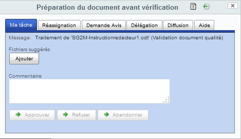
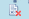

MU BlueProcessus¶
Exécution de processus documentaires¶
Introduction¶
Une fois le processus lancé, les personnes assignées sont notifiées par email, si le service de notification a été activé et par défaut ont accès à un formulaire de tâche.
Le contenu de l'email est de la forme :
Bonjour,
Une tâche vous a été assignée sur le document '<nom du document>' par <prenom nom initiateur> (<email initiateur>) sur l'application '<nom application>'.
Merci de procéder au plus vite à sa bonne résolution.
Vous pouvez y accéder grâce au lien suivant 'http://<votre serveur>/share/page/site/<site>/document-details?nodeRef=workspace://SpacesStore/cfdbbfd8-2c15-4c9c-9e78-758f0186d56a'.
Ce lien vous donne accès à la prévisualisation du document à traiter et à la commande 'Réaliser ma tâche documentaire'. Cordialement,
Les administrateurs <nom application> http://<votre serveur>/share
Note: le contenu des emails est entièrement paramétrable (voir 'Configuration des services').
Le formulaire de tâche est accessible via la commande 'Réaliser ma tâche documentaire' sur le document :

Ce formulaire de tâche est composé :
-
du titre de l'étape
-
de 2 icônes en haut à droite
-
permet d'afficher graphiquement le processus
-
permet d'afficher les actions sur les étapes passées du processus
-
-
d'un onglet 'Ma tâche' permettant l'enchaînement des étapes ou l'abandon du processus
-
potentiellement de l'onglet 'Réassignation'
-
potentiellement de l'onglet 'Demande Avis'
-
potentiellement de l'onglet 'Délégation'
-
potentiellement de l'onglet 'Diffusion'
-
potentiellement de l'onglet 'Aide'
Onglet 'Ma tâche'¶
Cet onglet propose à l'intervenant les transitions d'enchaînement d'étape :
-
le bouton 'Approuver' pour la transition de validation si au moins une étape a cette étape comme 'Etape parente de validation',
-
le bouton 'Refuser' pour la transition de refus si au moins une étape a cette étape comme 'Etape parente de refus',
-
le bouton 'Corriger' pour la transition autre si au moins une étape a cette étape comme 'Etape parente de transition autre',
-
le bouton 'Abandonner' pour la transition d'abandon si la propriété 'Etape abandon' de l'étape a été activée.
Il propose à l'intervenant le choix des intervenants suivants :
-
la liste de sélection 'Intervenants suivants' si la propriété 'Sélection des intervenants suivants' de l'étape a été autorisée et si au moins une étape a cette étape comme 'Etape parente de validation';
-
Si l'intervenant sélectionne des personnes et/ou groupes dans cette liste puis clique sur le bouton 'Approuver', les personnes et/ou groupes sélectionnés seront assignés aux étapes suivantes.
-
Si la propriété 'Sélection des intervenants suivants' de l'étape a pour valeur 'OptionnelPersonne' ou 'ObligatoirePersonne', la sélection est limitée à des personnes.
-
Si la propriété 'Sélection des intervenants suivants' de l'étape a pour valeur 'OptionnelGroupe' ou 'ObligatoireGroupe', la sélection est limitée à des groupes Alfresco.
-
Si la propriété 'Limite 'Intervenants suivants' au groupe' de l'étape est associée à un groupe, la sélection des personnes et/ou groupe est limitée aux membres de ce groupe.
-
-
la liste de sélection 'Intervenants suivants si autre' si la propriété 'Sélection des intervenants suivants pour transition autre' de l'étape a été autorisée et si au moins une étape a cette étape comme 'Etape parente de transition autre';
-
Si l'intervenant sélectionne des personnes et/ou groupes dans cette liste puis clique sur le bouton 'Corriger', les personnes et/ou groupes sélectionnés seront assignés aux étapes suivantes.
-
Si la propriété 'Sélection des intervenants suivants pour transition autre' de l'étape a pour valeur 'OptionnelPersonne' ou 'ObligatoirePersonne', la sélection est limitée à des personnes.
-
Si la propriété 'Sélection des intervenants suivants pour transition autre' de l'étape a pour valeur 'OptionnelGroupe' ou 'ObligatoireGroupe', la sélection est limitée à des groupes Alfresco.
-
Si la propriété 'Limite 'Intervenants suivants pour autre action' au groupe' de l'étape est associée à un groupe, la sélection des personnes et/ou groupes est limitée aux membres de ce groupe.
-
Il permet également à l'intervenant de donner son avis à travers :
-
le champ de saisie 'Commentaire' si la propriété 'Comportement Commentaire' de l'étape est optionnelle ou obligatoire. Tant que ce champ ne contient aucun texte, il invalide les boutons dont la transition est référencée par la propriété 'Transitions obligatoires pour Commentaire' de l'étape si 'Comportement Commentaire' est obligatoire.
-
la liste de chargement de fichiers 'Fichiers suggérés' si la propriété 'Comportement Suggestion' de l'étape est optionnelle ou obligatoire. Tant que cette liste ne contient aucun fichier chargé, elle invalide les boutons dont la transition est référencée par la propriété 'Transitions obligatoires pour Suggestion' de l'étape si 'Comportement Suggestion' est obligatoire.
Onglet 'Réassignation'¶
Cet onglet propose à l'intervenant la possibilité de réassigner sa tâche si le service de réassignation 'Comportement des services -> Réassignation' a été activé sur l'étape.
Il permet la réassignation à travers :
-
la liste de sélection 'Intervenants Réassignés' si la propriété 'Sélection des intervenants réassignés' de l'étape a été autorisée;
-
Si l'intervenant sélectionne des personnes et/ou groupe dans cette liste puis clique sur le bouton 'Réassigner', les personnes et/ou groupes sélectionnés seront assignés sur l'étape en cours à la place de l'utilisateur courant et de ses délégués.
-
Si la propriété 'Sélection des intervenants réassignés' de l'étape a pour valeur 'OptionnelPersonne' ou 'ObligatoirePersonne', la sélection est limitée à des personnes.
-
Si la propriété 'Sélection des intervenants réassignés' de l'étape a pour valeur 'OptionnelGroupe' ou 'ObligatoireGroupe', la sélection est limitée à des groupes Alfresco.
-
Si la propriété 'Limite 'Intervenants Réassignés' au groupe' de l'étape est associée à un groupe, la sélection des personnes et/ou groupes est limitée aux membres de ce groupe.
-
Si la propriété 'Réassignés à prédéfinis' de l'étape est associée à des personnes et/ou groupes, ces personnes et/ou groupes s'ajoutent à ceux sélectionnés par l'intervenant dans la liste 'Intervenants Réassignés' du formulaire de tâche.
-
-
le bouton 'Réassigner'
-
Si l'intervenant clique sur ce bouton, il lance la réassignation et n'a donc plus de tâche.
-
Ce bouton est invalidé si la liste de sélection 'Intervenants Réassignés' est vide et si la propriété 'Sélection des intervenants réassignés' de l'étape a pour valeur 'Obligatoire', 'ObligatoirePersonne' ou 'ObligatoireGroupe'.
-
Onglet 'Demande Avis'¶
Cet onglet propose à l'intervenant la possibilité de demander un avis à un ou des tiers si le service de demande d'avis 'Comportement des services -> Demande d'avis' a été activé sur l'étape.
Il permet la demande d'avis à travers :
-
la liste de sélection 'Conseillers' si la propriété 'Sélection des conseillers' de l'étape a été autorisée;
-
Si l'intervenant sélectionne des personnes et/ou groupe dans cette liste puis clique sur le bouton 'Demander un avis', les personnes et/ou groupes sélectionnés se verront assigner une tâche où ils pourront répondre par un 'Avis favorable', 'Avis défavorable' ou 'Sans Avis' en donnant leurs remarques et fichiers suggérés.
-
Si la propriété 'Sélection des conseillers' de l'étape a pour valeur 'OptionnelPersonne' ou 'ObligatoirePersonne', la sélection est limitée à des personnes.
-
Si la propriété 'Sélection des conseillers' de l'étape a pour valeur 'OptionnelGroupe' ou 'ObligatoireGroupe', la sélection est limitée à des groupes Alfresco.
-
Si la propriété 'Limite 'Conseillers' au groupe' de l'étape est associée à un groupe, la sélection des personnes et/ou groupes est limitée aux membres de ce groupe.
-
Si la propriété 'Conseillers prédéfinis' de l'étape est associée à des personnes et/ou groupes, ces personnes et/ou groupes s'ajoutent à ceux sélectionnés par l'intervenant dans la liste 'Conseillers' du formulaire de tâche.
-
-
le bouton 'Demander un avis'
-
Si l'intervenant clique sur ce bouton, il lance la demande d'avis et n'a plus de tâche le temps que les conseillers aient réalisés leur tâche de demande d'avis (automatiquement réalisée avec retour 'Sans Avis' au bout d'un temps paramétrable).
-
Ce bouton est invalidé si la liste de sélection 'Conseillers' est vide et si la propriété 'Sélection des conseillers' de l'étape a pour valeur 'Obligatoire', 'ObligatoirePersonne' ou 'ObligatoireGroupe'.
-
Pour donner leur avis, les conseillers ont accès au formulaire suivant:
Les actions 'Avis Favorable', 'Avis défavorable' ou 'Sans Avis' réalisées par les conseillers sont historisées comme toutes les actions sur le processus documentaire.
Onglet 'Délégation'¶
Cet onglet propose à l'intervenant la possibilité de déléguer à un ou des tiers si le service de délégation 'Comportement des services -> Délégation' a été activé sur l'étape.
Il permet la délégation à travers :
-
la liste de sélection 'Délégués' si la propriété 'Sélection des délégués' de l'étape a été autorisée;
-
Si l'intervenant sélectionne des personnes dans cette liste puis clique sur le bouton 'Déléguer', les personnes sélectionnées se verront assigner la tâche en cours en tant que délégués, tout comme les délégués que l'intervenant peut déjà avoir.
-
Si la propriété 'Limite 'Délégués' au groupe' de l'étape est associée à un groupe, la sélection des personnes est limitée aux membres de ce groupe.
-
Si la propriété 'Délégués prédéfinis' de l'étape est associée à des personnes, ces personnes s'ajoutent à celles sélectionnées par l'intervenant dans la liste 'Délégués' du formulaire de tâche.
-
-
le bouton 'Déléguer'
-
Si l'intervenant clique sur ce bouton, il lance la délégation et se réassigne la tâche ainsi qu'à ses délégués temporaires et/ou permanents, les personnes sélectionnées dans la liste 'Délégués' du formulaire de tâche et les personnes sélectionnées dans la liste 'Délégués prédéfinis' de l'étape.
-
Ce bouton est invalidé si la liste de sélection 'Délégués' est vide et si la propriété 'Sélection des délégués' de l'étape a pour valeur 'Obligatoire'.
-
Onglet 'Diffusion'¶
Cet onglet propose à l'intervenant la possibilité de diffuser le document et d'autoriser les accès en lecture et/ou écriture à certaines personnes.
En termes d'autorisation, il est à noter que l'intervenant ne peut pas retirer les droits d'accès à des personnes alors que ceci est possible au niveau du processus à travers les propriétés 'Permissions sortantes -> Pas d'accès pour', 'Permissions sortantes -> Etape des assignés sans accès' et 'Permissions sortantes -> Retirer accès à prédéfinis'.
Il permet la diffusion à travers :
-
la liste de sélection 'Diffusé à' si la propriété 'Diffusé à' de l'étape a été autorisée;
-
Si l'intervenant sélectionne des personnes et/ou groupe dans cette liste puis clique sur le bouton 'Approuver', ces personnes et/ou groupes sélectionnés recevront un email leur indiquant que l'étape a été approuvée et auront des droits en lecture sur le document.
-
Si la propriété 'Diffusé à' de l'étape a pour valeur 'OptionnelPersonne' ou 'ObligatoirePersonne', la sélection est limitée à des personnes.
-
Si la propriété 'Diffusé à' de l'étape a pour valeur 'OptionnelGroupe' ou 'ObligatoireGroupe', la sélection est limitée à des groupes Alfresco.
-
Si la propriété 'Limite 'Diffusé à' au groupe' de l'étape est associée à un groupe, la sélection des personnes et/ou groupes est limitée aux membres de ce groupe.
-
Si la propriété 'Diffusé à prédéfinis' de l'étape est associée à des personnes et/ou groupes, ces personnes et/ou groupes s'ajoutent à ceux sélectionnés par l'intervenant dans la liste 'Diffusé à' du formulaire de tâche.
-
Il permet la gestion des autorisations à travers :
-
la liste de sélection 'Consultable par' si la propriété 'Consultable par' de l'étape a été autorisée;
-
Si l'intervenant sélectionne des personnes et/ou groupe dans cette liste puis clique sur le bouton 'Approuver', ces personnes et/ou groupes sélectionnés auront des droits en lecture sur le document.
-
Si la propriété 'Consultable par' de l'étape a pour valeur 'OptionnelPersonne' ou 'ObligatoirePersonne', la sélection est limitée à des personnes.
-
Si la propriété 'Consultable par' de l'étape a pour valeur 'OptionnelGroupe' ou 'ObligatoireGroupe', la sélection est limitée à des groupes Alfresco.
-
Si la propriété 'Limite 'Consultable par' au groupe' de l'étape est associée à un groupe, la sélection des personnes et/ou groupes est limitée aux membres de ce groupe.
-
Si la propriété 'Consultable par prédéfinis' de l'étape est associée à des personnes et/ou groupes, ces personnes et/ou groupes s'ajoutent à ceux sélectionnés par l'intervenant dans la liste 'Consultable par' du formulaire de tâche.
-
-
la liste de sélection 'Modifiable par' si la propriété 'Modifiable par' de l'étape a été autorisée;
-
Si l'intervenant sélectionne des personnes et/ou groupe dans cette liste puis clique sur le bouton 'Approuver', ces personnes et/ou groupes sélectionnés auront des droits en écriture sur le document.
-
Si la propriété 'Modifiable par' de l'étape a pour valeur 'OptionnelPersonne' ou 'ObligatoirePersonne', la sélection est limitée à des personnes.
-
Si la propriété 'Modifiable par' de l'étape a pour valeur 'OptionnelGroupe' ou 'ObligatoireGroupe', la sélection est limitée à des groupes Alfresco.
-
Si la propriété 'Limite 'Modifiable par' au groupe' de l'étape est associée à un groupe, la sélection des personnes et/ou groupes est limitée aux membres de ce groupe.
-
Si la propriété 'Modifiable par prédéfinis' de l'étape est associée à des personnes et/ou groupes, ces personnes et/ou groupes s'ajoutent à ceux sélectionnés par l'intervenant dans la liste 'Modifiable par' du formulaire de tâche.
-
Suivi des documents passés par un processus documentaire¶
Introduction¶
Suite au passage d'un document par un processus documentaire, un certain nombre de services complémentaires sont fournis par Blue Processus aux utilisateurs à travers :
-
Un accès aux actions réalisées sur le document par le processus,
-
L'enregistrement d'accusés de réception et de prises de connaissance explicites,
-
L'enregistrement de demande de modification des documents,
-
La mise en révision des documents,
-
L'archivage des documents.
Service d'historisation¶
Introduction¶
Tout au long d'un processus documentaire, le service d'historisation est toujours activée.
Il conserve :
-
toutes les actions réalisées par les intervenants pendant le déroulement du processus documentaire,
-
les accusés de réception des destinataires des documents,
-
les prises de connaissance explicites des destinataires des documents.
Accès à l'historisation¶
Les données d'historisation d'un document passant ou ayant passé un processus documentaire sont accessibles via la page détail du document sous Alfresco Share :
Dans ce tableau, les colonnes
-
avatar présentent une photo de l'intervenant s'il en existe une
-
Nom, Prénom donne le nom et prénom de l'intervenant qui a réalisé la tâche ou dont un délégué a réalisé la tâche
-
Transition donne l'action réalisée dans la liste suivante :
-
Demarre indique le lancement du processus,
-
Accepte indique le passage d'une transition de validation (clic sur le bouton 'Approuver'),
-
Refuse indique le passage d'une transition de refus (clic sur le bouton 'Refuser'),
-
Abandonne indique le passage d'une transition d'abandon (clic sur le bouton 'Abandonner'),
-
Autre indique le passage d'une transition autre (clic sur le bouton 'Corriger'),
-
Demande Avis indique une demande avis (clic sur le bouton 'Demander un avis'),
-
AvisFavorable indique un avis favorable (clic sur le bouton 'Favorable'),
-
AvisDefavorable indique un avis défavorable (clic sur le bouton 'Défavorable'),
-
SansAvis indique pas d'avis (clic sur le bouton 'Sans Avis'),
-
Reassigne indique une réassignation (clic sur le bouton 'Réassigner'),
-
Delegue indique un rechargement des délégués (clic sur le bouton 'Déléguer'),
-
Consulte indique un accusé de réception si champ 'date renseigné et prise de connaissance si champ 'prise de connaissance renseigné.
-
-
Date donne la date d'enregistrement de l'évènement
-
Commentaire donne une description de l'évènement ou le commentaire entré par l'intervenant
-
Etape donne l'étape concernée dans le processus documentaire
-
Délégué: Nom, Prénom donne le délégué ayant réalisé la tâche
-
Prise de Connaissance donne la date de prise de connaissance (voir 'Accusé de réception')
-
Actions donne accès à 2 actions complémentaire :
-
un clic sur l'icône permet de lister les fichiers suggérés par l'intervenant. Un clic sur le nom d'un fichier suggéré le télécharge.
- un clic sur l'icône
 permet
d'afficher un tableau complet de l'évènement d'historisation
permet
d'afficher un tableau complet de l'évènement d'historisation
Le tableau ci-dessus donne les informations supplémentaires suivantes :
-
Identifiant Acteur : l'identifiant de connection de l'intervenant
-
Identifiant Délégué : l'identifiant de connection du délégué si la tâche a été réalisée par un délégué
-
Liste des assignés : la liste des assignés et leurs délégués
-
Nom du processus : le nom du processus lancé sur le document
Accusé réception & Prise de connaissance¶
Introduction¶
Le service d'accusé réception enregistre le fait qu'un utilisateur à pré-visualiser ou télécharger un document : cet enregistrement est automatique et ne prouve pas que l'utilisateur a lu le document.
Le service de prise de connaissance demande explicitement à l'utilisateur de confirmer qu'il a pris connaissance du contenu du document.
Intégration dans Blue processus¶
L'enregistrement d'accusés de réception et des prises de connaissance est réalisé pour les personnes ou membres des groupes qui sont définis dans les propriétés 'Diffusé à' de l'onglet 'Diffusion & Notification' du processus ou qui sont définis comme cible de l'association 'Diffusé à' du nœud paraphe lorsque le processus documentaire se termine avec succès (se termine par une transition de Validation sur la dernière étape) sur le document.
A la fin du processus, un accusé de réception est créé par utilisateur de ces listes 'Diffusé à'.
Un accusé de réception a 2 dates, non renseignées à la création:
-
une permière date pour la prise en compte de l'accusé réception quand l'utilisateur accède au document en pré-visualisation ou en téléchargement,
-
une seconde date pour la prise en compte du fait que l'utilisateur indique qu'il a explicitement pris connaissance du document.
Accusé de réception¶
Le fait d'accusé réception signifie que la personne indique qu'elle a vu le document. Lorsqu'un document est approuvé, des emails sont envoyés aux destinataires qui les prévient que le document vient de passer avec succès le processus documentaire.
À partir de cet email, les destinataires peuvent accéder à la page du document via le lien donné dans l'email.
Ce lien permet de charger la page de détail Alfresco Share du document : le fait d'accéder à cette page ou au téléchargement du document - quand il s'agit d'un fichier - enregistre la date d'accusé de réception.
Tant que l'utilisateur ne clique pas sur ce lien ou ne télécharge pas le document, l'accusé de réception reste sans date.
Les interfaces de visualisation des accusés réception sont :
- Dans l'espace documentaire, une loupe blanche indique que le document doit être accusé :
- Dans la liste des accès, une entrée est créée par destinataire avec dans la colonne "Date" la valeur "PAS_RECEPTIONNÉ" :
- Lorsque la personne a accusé réception cette valeur est mise à jour :
-
Dans l'espace documentaire, le filtre 'Non vus par tous' permet de trier les documents par rapport à ce paramètre, c'est à dire qu'il liste les document dont les destinataires n'ont pas tous accusé réception du document.
-
l'action 'Envoyer un rappel' sur chaque document du filtre 'Non vus par tous' permet d'envoyer un email de rappel aux personnes qui n'ont pas encore accusées réception.
Prise de connaissance¶
Le fait de prendre connaissance d'un document signifie que l'utilisateur qui réalise cette action atteste avoir lu le document.
Cette action de prise de connaissance explicite est accessible aux destinataire d'un document.
Les interfaces d'activation et visualisation des prises de connaissance sont :
- Dans l'espace documentaire, une loupe blanche avec 'Vu' en rouge indique que le document a été accusé mais non reconnu :
- Dans la liste des accès, une entrée est créée par destinataire avec dans la colonne "Prise de connaissance" la valeur "PAS_RECONNU" :
- Lorsque la personne a spécifié avoir pris connaissance cette valeur est mise à jour :
- Dans l'espace documentaire, une loupe avec 'Vu' en vert indique que le document a été reconnu :
-
Dans l'espace documentaire, le filtre 'Non reconnus par tous' permet de trier les documents par rapport à ce paramètre, c'est à dire qu'il liste les document dont les destinataires n'ont pas tous pris connaissance du document.
-
l'action 'Envoyer un rappel' sur chaque document du filtre 'Non reconnus par tous' permet d'envoyer un email de rappel aux personnes qui n'ont pas encore pris connaissance.
Service de demande de modification¶
L'action de demande de modification associé à un document ayant passé un processus documentaire permet de soumettre au responsable du document des modifications via un formulaire de demande.
Il ne s'agit que de demandes, le document ne pouvant être modifié.
Pour chaque demande, le responsable du document
-
reçoit une email lui indiquant qu'une demande de modification été faite,
-
a une tâche pour répondre à la demande :
-
soit en approuvant la demande qui sera intégrée dans la prochaine mise en révision du document,
-
soit en refusant la demande.
Mise en révision¶
L'action de mise en révision associé à un document ayant passé un processus documentaire permet d'effectuer les modifications sur une copie du document de la forme '<nom du document>-revision.<suffixe du document>, tout en laissant l'original visible pour tous.
Lorsque les modifications ont été apportées sur cette copie, la copie peut être relancée sous un cycle d'approbation.
Une fois ce nouveau cycle passé, la copie remplace le document avec une nouvelle version majeure.
Pour réaliser une mise en révision, les actions sont :
- En cliquant sur l'action 'Mise en révision", un document **<nom_du_document>-revision.<extension>** est créé.
- Apportez les modifications souhaitées.
- Cliquez sur 'Approuver le document' pour relancer un cycle d'approbation.
À l'approbation du document, lorsque toutes les étapes ont été réalisées et que l'approbation a été validée, le document **<nom_du_document>-revision.<extension>** est fusionné au document original. C'est à dire que toutes les modifications apportées au document en révision sont reportées sur le document original. Le document **<nom_du_document>-revision.<extension>** est alors supprimé.
Note: l'action de mise en révision est souvent couplée à l'action de demande de modification en faisant en sorte qu'il faille au moins une demande de modification pour activer l'action de mise en révision.
Archivage¶
L'action d'archivage permet d'archiver un document approuvé en le plaçant dans un dossier 'Archive' accessible seulement par les gestionnaires de site. Seule la dernière version du document est conservée. Une fois archivé, le document peut être supprimé définitivement.
Note: l'action d'archivage est souvent couplée à l'action de demande de modification en faisant en sorte qu'il faille au moins une demande de modification pour activer l'action d'archivage. Dans ce cas, la demande de modification indique les raisons et les conditions de l'archivage
Annexes¶
Utilisation via Blue Deliberation¶
Les processus définis dans Blue Processus peuvent être associés à n'importe quelle application s'appuyant sur Alfresco.
C'est le cas de Blue Déliberation qui permet de gérer les délibérations des collectivités.
Prérequis¶
Considérant que Blue Processus est installé, l'application 'Blue Deliberation' a dû ensuite être installée en suivant les étapes:
-
Se connecter en administrateur sous le portail share :
-
Créer un site de nom 'Gestion des Délibérations' et d'identifiant 'bluedeliberation'
-
Dans un autre onglet de votre navigateur, lancer sous un compte administrateur Alfresco le script d'initialisation :
http://<votre serveur>:<votre port>/alfresco/service/deliberation/initialize
-
Si vous souhaitez utiliser les données de test créées pour Blue Processus, lancer sous administrateur le script de configuration des données de test pour Blue Deliberation :
http://<votre serveur>:<votre port>/alfresco/service/deliberation/initTestData
Développement d'un processus de délibération¶
Dans cette partie nous ne décrirons pas dans le détail le développement d'un processus de délibération comme décrit dans 'Conception de processus documentaires' mais nous présenterons les aspects particuliers du processus de délibération avant séance.
Le processus de délibération que nous présentons ici est celui qui concerne la validation des délibérations avant séance; il est souvent spécifique à chaque collectivité mais contient généralement les mêmes étapes importantes.
Ce processus présente les particularités suivantes :
- l'étape de démarrage 'Validation Chef de service' sur validation par le chef de service permet de passer soit à l'étape 'Validation DGST' soit à l'étape 'Enregistrement SAG Secrétariat' car l'étape 'Validation DGST' a été définie avec une condition (flèche sur la ligne verte pour indiquer la présence d'une condition):
L'étape 'Enregistrement SAG Secrétariat' n'a pas de condition et sera donc choisie par défaut si la condition de l'étape 'Validation DGST' est fausse lors de l'exécution de l'étape.
-
l'étape 'Validation RAG' conduit à 2 branches parallèles qui démarre respectivement par les étapes 'Intégration dans dossier de CC' et 'Intégration dans Ordre du Jour par RAG'. Des branches parallèles doivent obligatoirement aboutir en validation à une même étape et ne doivent pas sortir en correction sur une étape commune. Ceci signifie que les 2 principes suivants doivent être valides dans la conception d'un processus documentaire:
- Si l'on suit les lignes vertes à partir de la première étape d'une branche parallèle et à partir de la première étape d'une autre branche parallèle, on doit aboutir sur une étape commune sans repasser par l'étape ayant créée les branches parallèles,
- Si l'on suit une ligne rouge à partir d'une étape d'une branche parallèle, on doit obligatoirement aboutir à une étape de cette branche parallèle (après l'étape ayant créée les branches parallèles et avant celle commune aux branches parallèles).
-
Chaque étape est associée à un groupe et n'est pas en parallèle pour les acteurs (ce qui signifie qu'un seul acteur du groupe suffit pour valider/refuser une étape).
-
Les étapes 'Validation Chef de Service', 'Validation DGST', 'Validation ordre du jour par DG' et 'Finalisation du dossier CC par Secrétariat SAG' autorisent l'abandon :
-
Les 2 premières étapes ne sont pas sur des branches parallèles et donc dès qu'un utilisateur abandonne sur une des ces étapes, le processus est arrêté.
-
Les 2 dernières étapes sont sur une branche parallèle et donc dès qu'un utilisateur abandonnent sur une de ces étapes la branche est interrompue mais pas les autres branches parallèles qui peuvent continuer jusqu'à l'étape commune, sachant que les acteurs qui ont des tâches sur les autres branches parallèles sont notifiés de l'abandon.
-
-
Ce processus utilise beaucoup le service d'injection de méta-données pour mettre à disposition les documents suivants:
- le dossier de séance,
- l'ordre du jour,
- l'ordre du jour synthétique,
- les convocations, une par membre de séance,
- la liste d'émargement,
- les procurations.
Pendant la séance, les votes et les procurations sont mises à jour sur l'application.
Après séance, d'autres documents sont générés comme:
- le procès-verbal de la séance,
- la liste des procurations,
- le chapeau,
- les délibérations pour la préfecture.
Exécution d'un processus de délibération¶
-
Se connecter sous AGSecrA (mot de passe AGSecrA, données disponibles si vous avez lancé le script d'initialisation des données de test, voir la partie 'Prérequis') sur l'application Blue Deliberation :
http://<votre serveur>:<votre port>/share-deliberation
-
Cliquer sur 'Blue Délibération' en haut de la page L'espace documentaire de gestion des délibérations est affiché.
-
Aller dans l'espace 'Conseil Communautaire'
-
Créer une séance de conseil via le bouton 'Nouvelle Séance'
-
Aller dans la nouvelle séance en cliquant sur son nom
-
Créer une nouvelle délibération via le bouton 'Nouvelle Deliberation'.
-
Le formulaire de création de délibération s'affiche. Renseigner le champ 'Nom de fichier' avec 'ma première délibération' et les autres champs avec les valeurs que vous souhaitez. Puis cliquer sur 'Enregistrer'.
-
Aller dans la nouvelle délibération en cliquant sur son nom
-
Dans le menu associé à la nouvelle délibération, cliquer sur 'Valider la délibération' pour lancer un circuit de validation d'avant séance sur la délibération.
-
Le formulaire de lancement de processus s'affiche:
-
Sélectionner un intervenants suivants, par exemple 'AGDir'.
-
Cliquer sur 'Enregistrer'.
Le processus documentaire 'Délibération avant séance' est démarré sur la délibération 'ma première délibération'.
Le tableau des actions du processus s'affiche avec une première action correspondant au démarrage du circuit de validation.
Comme 'AGDir' est dans le groupe 'Chef de service' à qui est assigné la tâche de démarrage 'Validation Chef de Service' et que AGSecrA a délégation sur AGDir, une nouvelle commande 'Réaliser ma tâche de validation' est accessible à la place de 'Valider la délibération' à droite de l'écran (la commande 'Valider la délibération' n'est plus disponible car il n'est pas autoriser de lancer 2 processus documentaires en même temps sur le même document).

- Cliquer sur 'Réaliser ma tâche de validation' Le formulaire de tâche est ouvert:
Ce formulaire permet de :
-
'Approuver' pour passer à l'étape de validation suivante qui est soit l'étape 'Validation DGST' si sa condition est vérifiée soit l'étape 'Enregistrement SAG Secrétariat'.
-
'Abandonner le projet' pour abandonner le processus. Ce bouton est désactivé car il est attendu que l'utilisateur renseigne un commentaire expliquant l'abandon : ce commentaire est intégré à l'email de notification de l'abandon.
-
'Demander un Avis' sous l'onglet 'Demande Avis' pour demander un avis à une ou plusieurs autres personnes. Ce bouton est désactivé car il est attendu que l'utilisateur renseigne la liste des 'Conseillers pour demande d'avis'. Un email de notification est envoyé aux personnes choisies.
-
'Recharger les délégués' sous l'onglet 'Délégation' pour que l'utilisateur puisse re-soumettre la tâche à ces délégués s'il vient d'en ajouter. Un email de notification est envoyé aux délégués. Il n'est pas proposer à l'utilisateur de sélectionner des délégués sur ce formulaire. L'action 'Recharger les délégués' ne s'applique donc qu'au délégués qu'il a créée via la gestion des délégués sous Alfresco Share.
L'utilisateur sur toutes les actions a la possibilité de renseigner un commentaire et de charger des fichiers bureautiques suggérés
Il est à noter que cette étape ne définit pas de demande de correction mais il a été choisi d'abandonner directement si la délibération ne convient pas : l'initiateur pourra toujours relancer un processus documentaire par la suite sur le même document si abandon.
-
Cliquer sur 'Approuver'
-
En fonction du test, la prochaine étape est soit 'Validation DGST' si sa condition est vérifiée soit 'Enregistrement SAG Secrétariat'. Un groupe d'acteurs est assigné sur chacune de ces étapes et à l'initialisation des données de test, 'user_1' a été mis dans tous les groupes participant au processus. Donc, la tâche qu'elle qu'elle soit lui sera affectée.
Vous pouvez ainsi continuer à votre guise le scénario jusqu'à la validation du document ou son abandon en passant par des étapes de correction.
Utilisation via Blue Test¶
Les processus définis dans Blue Processus peuvent être associés à n'importe quelle application s'appuyant sur Alfresco.
C'est le cas de Blue Test qui permet de gérer le suivi de tests de produits ou solutions.
Prérequis¶
L'application 'Blue Processus' a du être installée et un site de suivi des tests doit être créé en suivant par exemple les étapes:
-
Se connecter en administrateur sous le portail share :
http://<votre serveur>:<votre port>/share
-
Créer un site collaboratif de nom 'Recette' et d'identifiant 'recette'
-
Aller dans l'espace documentaire de ce site et créer l'arborescence suivante:
-
Espace 'Applications' avec pour description : 'Cet espace contient le suivi des tests/Recettes sur mes produits'
-
Espace 'Projets' avec pour description : 'Cet espace contient le suivi des tests/recettes des versions successives de mes projets'
-
Sous l'espace 'Projets', Espace '<nom d'un de vos projet>' avec pour description 'Cet espace contient le suivi des tests des versions successives de mon projet'
-
Sous l'espace '<nom d'un de vos projet>', Espace '1.0' avec pour description : 'Cet espace contient le suivi des tests de la version 1.0 de mon projet'
-
Développement d'un processus de suivi de test¶
Blue Test est une application de suivi de test qui s'appuie sur Blue Processus pour définir le cahier de test.
Le suivi des tests se fait à travers un processus documentaire de Blue Processus.
Ce processus est composé d'une série de descriptions de tests à passer sur l'application à tester.
Lorsqu'un testeur démarre un test d'une application, il lance le processus de suivi de test et chaque tâche qui lui est assigné décrit un test à réaliser sur l'application.
Au lancement du processus documentaire, un fichier MS Word 'cahier de tests' est créé et contient la description du cas de test.
Au cours du processus documentaire, un fichier MS Word 'suivi de tests' est créé et mis à jour avec le suivi des tests réussis ou échoués.
A la fin du processus documentaire, un fichier MS Word 'synthèse des tests' de synthèse de tous les tests réalisés via ce processus documentaire de suivi de test est créé.
La première étape pour le suivi de tests est donc la création d'un processus documentaire Blue Processus.
Dans cette partie nous ne décrirons pas dans le détail le développement d'un processus de suivi de tests comme décrit dans 'Conception de processus documentaires' mais nous présenterons les aspects particuliers de ce processus.
Le processus de test que nous présentons ici est celui qui concerne la première phase de tests de recette de l'application Blue Courrier.
Ce processus présente les particularités suivantes:
-
Le processus décrit une séquence de test qui en général correspond à un scénario d'utilisation : ce scénario dépend du produit/projet testé; on peut choisir des scénarios par typologie d'utilisateur, par fonctionnalité, par groupe de fonctionnalités, par mode d'usage ou par phase. Dans tous les cas, il faut veiller à ce que les séquences de test ne testent pas les mêmes choses et que l'ensemble des séquences assure une couverture fonctionnelle complète des scénarios d'utilisation de base.
-
Chaque étape du processus décrit un cas de test. Par exemple, le premier cas de test 'Assignation du traitement de courrier' du processus ci-dessus a pour séquence d'actions à réaliser par la personne qui teste :
La partie 'Aide Affichée' qui est renseignée dans chaque étape du processus est affichée à l'utilisateur qui teste (qui a donc une tâche de processus documentaire) et va alimenter les documents de cahier de tests et de suivi de tests.
-
Les étapes (sauf la dernière 'Fin du processus') ont toutes:
-
une sortie en validation (flèche verte) qui permet d'indiquer que le cas de test a réussi et de passer au cas de test suivant : le libellé de cette action est 'test réussi',
-
une sortie en erreur (flèche rouge) qui permet d'indiquer que le cas de test a échoué et de passer au cas de test suivant : le libellé de cette action est 'test échoué',
-
une sortie en abandon (encadré de l'étape en rouge) qui permet d'abandonner la séquence de test, le testeur considérant que la criticité des problèmes rencontrés ne permet plus de continuer la séquence de tests dans des conditions efficaces et utiles : le libellé de cette action est 'Abandonner'.
-
-
La première étape est assignée à l'acteur initial (celui qui a lancé le processus).
-
Les étapes (sauf la première et la dernière 'Fin du processus') sont toutes assignées à l'acteur précédent.
-
L'étape 'Fin du processus' n'est assignée à personne , elle termine seulement le processus. Pour terminer la séquence de test, il est proposé sur l'avant-dernière étape - qui est un cas de test - les actions 'test réussi', 'test échoué' ou 'Abandonner'.
Un processus de test va donc toujours être sous cette forme de serpentin sans trou ou zone de fin.
Pour développer un processus de test, nous vous conseillons de copier un processus existant.
Pour cela, procéder comme suit:
-
Se connecter en administrateur sous le portail share :
http://<votre serveur>:<votre port>/share
-
Ouvrer l'icône 'Plus..' et Cliquer sur 'Plus..'
-
Cliquer sous 'Outils -> Import'
Note: si la commande 'Import' n'apparaît pas, c'est que l'add-on Share d'import/export n'a pas été installé.
Si vous utilisez SIDE, cocher l'option 'import/export' du générateur de portail du modèle d'application, re-builder et re-livrer.
Si vous n'utiliser pas SIDE, installer l'add-on Share 'import/export' à télécharger sur le site des add-on d'Alfresco.
-
Remplisser le formulaire avec :
-
Espace de destination : /Sites/blueparapheur/documentLibrary/Processus/cm_folder
-
Importer dans l'entrepôt : sélectionner un fichier acp sous <répertoire d'installation d'Alfresco>/tomcat/webapps/alfresco/WEB-INF/classes/alfresco/module/com.bluexml.parapheur.alfresco_parapheur4029E/Processus/BlueTest
-
-
Cliquer sur 'Importer'
-
Aller sous l'espace documentaire du site 'Processus Documentaire Blue Processus'
-
Se placer sous l'espace 'Processus/cm_foler'
-
Dans le menu associé au processus qui vient d'être importé, sélectionner 'Afficher le processus'
-
Dans la fenêtre qui s'affiche, cliquer sur le bouton 'Editer' pour mettre à jour les données du processus.
- Dans le formulaire, changer le nom et la description du processus conformément à la séquence de test que vous voulez produire, puis Cliquer sur 'Enregistrer'.
IMPORTANT: si vous souhaitez exporter vos processus pour les transférer sur d'autres instances, ne mettez pas des noms trop longs car l'import sera en erreur.
- Cliquer sur l'icône
 de la première étape pour éditer
ses propriétés:
de la première étape pour éditer
ses propriétés:
- Dans le formulaire, changer le nom, la description et l'aide affichée du processus conformément à la séquence de test que vous voulez produire, puis Cliquer sur 'Enregistrer'
Un soin tout particulier doit être apporté à ces champs car ils sont utilisés dans les cahiers de test et de suivi générés ainsi que dans l'aide affichée sur le formulaire de tâche du processus en phase d'exécution.
-
Répéter les étapes 10 et 11 pour les étapes suivantes en décrivant vos différents cas de test.
-
Si vous souhaitez supprimer une étape, utiliser l'icône  de cette étape: attention à bien mettre à jour les liens ensuite sur les autres étapes - en les éditant et en allant sous l'onglet 'Etapes et Intervenants' - pour avoir toujours la forme de serpentin qui permet d'enchaîner les tests.
-
Si vous souhaitez éditer une étape, utiliser l'icône
de
cette étape : un formulaire d'édition de l'étape s'affiche qui
reprend les informations de base de l'autre étape et qui est
initialisé correctement pour qu'elle se positionne dans le serpentin
après l'autre étape. -
Si vous souhaitez ajouter une étape après une autre étape, utiliser l'icône
 de l'autre étape : un formulaire réduit de
création de la nouvelle étape s'affiche qui reprend les informations
de base de l'autre étape et qui est initialisé correctement pour
qu'elle se positionne dans le serpentin après l'autre étape.
de l'autre étape : un formulaire réduit de
création de la nouvelle étape s'affiche qui reprend les informations
de base de l'autre étape et qui est initialisé correctement pour
qu'elle se positionne dans le serpentin après l'autre étape. -
Si vous souhaitez créer une nouvelle étape à partir de rien, cliquer sur le bouton 'Créer une étape' : toutefois, nous vous invitons à copier l'aide affichée d'une étape existante pour conserver la forme et le fond nécessaire à la réalisation d'un cas de test.
-
-
Au fur et à mesure que vous ajoutez/éditez/supprimez des étapes, vous pouvez ré-ordonner le serpentin des étapes par simple glisser sans oublier de cliquer sur le bouton 'Positionnement -> Sauvegarder' pour conserver votre dernier positionnement.
-
N'oublier pas l'étape 'Fin du processus' assignée à aucune personne pour que le cas de test précédent cette étape de fin ait les actions 'Test réussi" et 'Test échoué'.
-
Une fois votre séquence au point, cliquer sur la croix en haut à droite pour fermer le modeleur graphique de processus.
Votre processus de suivi de tests est créé et peut être utilisé.
Exécution d'un processus de suivi de test¶
Pour expliquer l'utilisation du suivi de test, nous nous appuierons sur la structure du site 'Recette' décrit dans le chapitre 'Prérequis' ci-dessus.
-
Se connecter sous le portail share avec un compte ayant le rôle collaborateur sur le site 'Recette':
http://<votre serveur>:<votre port>/share
-
Aller sous l'espace documentaire du site 'Recette'
-
Aller dans l'espace '**Projets / <nom d'un de vos projet> / 1.0 **'
-
Créer un nouvel espace avec pour :
nom : <nom d'un de vos projet> Tests de base <date du jour-heure du jour>
description : Cette instance de tests s'attache à valider l'intégration du projet MONPROJET de MONCLIENT pour la révision svn 53866 et le build 345.
Supposons que :
-
les tests sont réalisés sur une instance Alfresco installée sur le serveur monserveur.com (https://monserveur.com/share) .
-
L'application installée sur cette instance correspond à la révision '53866' du svn et au numéro de build 345.
-
Cliquer sur 'Enregistrer'
-
Dans le menu à droite de ce nouvel espace, cliquer sur 'Lancer un Processus'
-
Dans le formulaire qui s'affiche, Choisissez le processus créé ci-avant dans la liste 'Processus Documentaire' et cliquer sur 'Enregistrer'
-
Une icône est placée devant le nom de l'espace pour indiquer qu'un processus documentaire est en cours sur cet espace. Dans le menu à droite de ce nouvel espace, cliquer sur 'Réaliser ma tâche documentaire'
-
Dans le formulaire de tâche qui s'affiche, cliquer sur l'onglet 'Aide': l'aide affiche la séquence d'actions à réaliser pour procéder au cas de test sur l'instance à tester 'https://monserveur.com/share'.
-
Dans un autre onglet/fenêtre de votre navigateur, se connecter sur l'instance à tester https://monserveur.com/share comme décrit dans la séquence d'actions et réaliser la séquence d'actions.
-
Si vous obtenez les résultats attendus comme décrits dans l'aide et que la séquence d'action s'est passée comme indiquée, dans le formulaire de tâche, cliquer sur 'Test réussi'
-
Si vous n'obtenez pas les résultats attendus comme décrits dans l'aide ou que la séquence d'action ne s'est pas passé comme indiqué, dans le formulaire de tâche entrer un commentaire et cliquer sur 'Test échoué'
-
Si vous êtes dans le cas ci-avant et que les dysfonctionnements d'une étape précédente ou de cette étape font que les tests ne pourront plus se poursuivre, dans le formulaire de tâche entrer un commentaire et cliquer sur 'Abandonner'
-
Si le processus a des cas de test à suivre, une nouvelle tâche vous est assignée et vous procédez comme ci-avant.
Au démarrage du processus, le document MS Word 'Cahier_de_Tests_<nom de votre cas de test>_1.0.docx' a été généré et contient la liste de tous les cas de test et pour chaque cas de test, le détail des étapes du cas de test.
A la validation/refus ('Test réusssi'/'Test échoué') de chaque étape, le document Ms Word 'Cas_de_Test_<nom de votre cas de test>_1.0.docx' est généré et contient la liste des étapes du processus de test avec leur avancement puis un détail de chaque étape comme pour le cahier de test ci-avant.
A la finalisation du processus, le document Ms Word 'Synthese_des_Tests_<nom de votre cas de test>_1.0.docx' est généré et contient les résultats de tous les cas de test.
Intégration bug database¶
Lorsque la personne réalisant les tests indique qu'un test a réussi ou échoué, il est souvent efficace que cette action alimente automatiquement une bug database pour lui éviter d'aller entrer manuellement cette information sur la bug database.
Aussi, il est possible de configurer votre cas de test pour qu'une entrée soit automatiquement ajoutée; cette intégration a pour l'instant été réalisée sur la bug database Jira.
Pour intégrer Jira au processus de suivi de test, procéder comme suit:
-
Se connecter sur le serveur où est installé l'instance d'Alfresco et de Blue Processus (terminal linux ou fenêtre commande windows)
-
Éditer le fichier 'jira.user.service.properties' de configuration d'accès à Jira:
vi <ALFRESO\_HOME\>/tomcat/webapps/alfresco/WEB-INF/classes/alfresco/module/com.bluexml.parapheur.alfresco\_parapheur4029E/jira.user.service.properties
-
changer les paramètre suivants pour atteindre votre instance de Jira :
jira.default.connectString : l'url d'accès à votre instance de JIRA; par exemple: https://bugs.side-labs.org/ jira.default.username : un compte d'accès qui a des droits de création et d'édition de bug sur les projets et composants sur lesquels portent les tests jira.default.password : le mot de passe du compte ci-dessus jira.default.project.key : le projet par défaut sur lesquels les tests portent (est surchargé par les propriétés des tests comme décrit ci-après) jira.default.component.name : le composant par défaut du projet par défaut sur lesquels les tests portent (est surchargé par les propriétés des tests comme décrit ci-après) jira.default.version.name : la version par défaut du projet par défaut sur lesquels les tests portent (est surchargé par les propriétés des tests comme décrit ci-après)
-
Se connecter sous le portail share avec un compte ayant le rôle collaborateur sur le site 'Blue Processus'
-
Aller sous l'espace documentaire du site 'Blue Processus'
-
Aller dans l'espace 'Processus/cm_folder'
-
Editer les propriétés de votre processus de test
-
Sous l'onglet 'Services utilisateur à appliquer', dans le champ 'Service Utilisateur après les services sortant', entrer '<java>com.bluexml.blueparapheur.workflow.Utils.JiraUserService</java>', puis cliquer sur 'Enregistrer'
-
Aller sous l'espace documentaire du site 'Recette'
-
Aller dans l'espace '**Projets / <nom de votre projet> / 1.0 **'
-
Sur le menu à droite de votre cas de test ''<nom de votre projet> Tests de base <date du jour-heure du jour>', cliquer sur 'Gérer les aspects'
-
Sélectionner l'aspect 'Recettable'
-
Sur le menu à droite de votre cas de test ''<nom de votre cas projet> Tests de base <date du jour-heure du jour>', Cliquer sur 'Editer les propriétés' puis sur 'Toutes les propriétés'
-
Cliquer sur l'onglet 'Recettable'
-
Renseigner les champs:
- Projet : l'identifiant du projet dans lequel sont créés les bugs; Par exemple, pour Jira, il s'agit de la clé du projet.
- Composant : le composant du projet associé au bug créé; par exemple dans Jira il s'agit du nom d'un composant du projet.
- Version : la version du projet associée au bug créé; par exemple dans Jira il s'agit du nom d'une version du projet.
-
Dès que vous relancerez un processus de test, des bugs seront créés selon le synopsis suivant:
-
Pour une étape (un cas de test), si vous cliquer sur 'Test échoué', un bug de priorité majeure est créé avec le nom de l'étape suivi d'un identifiant généré par la contraction de l'action et du nom de l'étape.
Ce bug contient un premier commentaire correspondant au commentaire entré par l'utilisateur.
L'identifiant est important et ne doit pas être supprimé du nom du bug car il permet de retrouver le bug et de le mettre à jour si, lors d'un autre processus, l'utilisateur clique de nouveau sur 'Test échoué' pour cette même étape. Ceci évite de multiplier les bugs.
-
Pour une étape (un cas de test), si vous cliquer sur 'Test réussi' et que l'utilisateur entre un commentaire, un bug de priorité mineure est créé avec le nom de l'étape suivi d'un identifiant généré par la contraction de l'action et du nom de l'étape.
Ce bug contient un premier commentaire correspondant au commentaire entré par l'utilisateur.
L'identifiant est important et ne doit pas être supprimé du nom du bug car il permet de retrouver le bug et de le mettre à jour si, lors d'un autre processus, l'utilisateur clique de nouveau sur 'Test réussi' pour cette même étape. Ceci évite de multiplier les bugs.
-